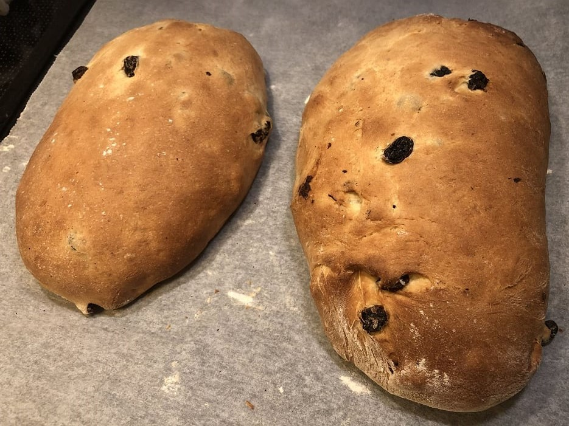

Julebrød
Norwegian "christmas bread" is a sweet pastry usually shaped like a bread. Is tasty to eat as it is, gets even better with butter, and works well with jams or cured meat.
metadata
Created on 2019-12-19
Adapted from SAFTIG JULEBRØD (ELLER JULEKAKE, OM DU VIL) by Trine Sandberg @ Trines matblogg (2019-12-08)
Recipe should yield this much: 4 loaves. 2100 g.
Estimated time needed: At least 3 hours 59 minutes. At most 4 hours 26 minutes.
Ingredients
| 1000 | g | flour | ||
| 300 | g | Raisins | ||
| 150 | g | sugar | ||
| 150 | g | butter | ||
| 25 | g | dry yeast | ||
| 6 | dl | milk | ||
| 2 | tsp | cardamom | ||
| 2 | egg | |||
| 1 | dl | Water | Warm | |
| 0.5 | tsp | salt |
Scaling
Timeline
Directions
⌛ Active time 1 minutes | Passive time 15 minutes
- 300 g Raisins
- 1 dl Water | Warm
Put raisins in warm water:
The water should just barely cover the raisins, so the amount you need may vary with the size and shape of container you're using. Set them aside to soak for about 15 minutes.
⌛ Active time 15 minutes
- 1000 g flour
- 6 dl milk
- 150 g sugar
- 1 egg
- 25 g dry yeast
- 2 tsp cardamom
- 0.5 tsp salt
Mix dough and knead:
Mix together the ingredients and knead for about 10 minutes. If you're using a kitchen machine use a dough hook and mix at medium speed (still for 10 minutes). If your feeling that the dough is getting too loose or too compact feel free to add more flour or milk as needed.
⌛ Active time 11 minutes
- 150 g butter
Knead in butter in small chunks:
Add butter in small chunks and knead until it's completely blended in. The dough should now easily let go of the sides of the bowl fo the kitchen machine or the surface you're working on. This should take you about 10 minutes of kneading.
⌛ Active time 5 minutes
Drain and add raisins to dough:
Drain the raisins, squeeze them a little bit to get out some of the excess moisture, and add them to the dough. Knead the dough until the raisins are evenly distributed. But be carefull not to knead it too much, if you do the raisins will end up crushed.
⌛ Passive time 90 minutes
Rest until doubled in size:
Cover the dough and set aside to rest, until it has approximately doubled in size. This can take about 1 and a half hours.
⌛ Active time 1 minutes
Divide dough in pieces on lightly floured surface:
Lightly flour the surface you want to work on. Divide the dough into evenly sized pieces that you're later going to shape into the loaves you'll be baking. The base recipe amount works well for 4 loaves.
⌛ Active time 1 minutes | Passive time 15 minutes
Shape dough pieces into buns and bench rest:
This step can be skipped if you want to. After dividing your dough into pieces shape them into buns, cover (with for instance a cloth), and let bench rest for about 15 minutes.
⌛ Active time 5 minutes
Shape dough into loaves:
Shape the dough pieces into loaves and place on baking trays lined with baking paper. If you split the original sized recipe in 4 pieces about 2 loaves per baking tray should be fine.
⌛ Passive time 60 minutes
Rest until doubled in size:
Cover the loaves and set aside to rest, until they have about doubled in size. This can take about 1 hour.
⌛ Active time 1 minutes | Passive time 10 minutes
Preheat the oven:
If you're using convection, set it to approximately 175 ℃. Otherwise, if you're using the conventional heating mode (top and bottom element heating), set it to 200 ℃.
⌛ Active time 4 minutes
- 1 egg
Brush loaves with egg wash and score:
Whisk together and egg to make egg wash, and brush on the loaves. Then, if you want to, score the bread by making some cuts into it.
⌛ Active time 2 minutes | Passive time 30 minutes
Bake loaves:
If you're using conventional heating place the tray at the bottom rack. Bake unitll the loaves have a nice color, and are cooked through. The loaves should make a hollow sound if you knock on the underside. This should take about 25 to 30 minutes.